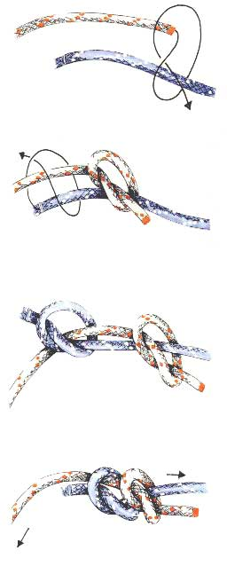

Dubbele Zoeteliefjes (Dubbele Vissersknoop)
Gebruik
Begin 19e eeuw werd deze knoop door vissers ook wel waterknoop genoemd. De knoop wordt ook wel hengelaarsknoop, Engelse knoop, Engelsmansknoop, twee zoeteliefjes of schippersknoop genoemd. (Kapitein Marryat schreef in zijn roman Peter Simple : "...er schuilt een moraal in die knoop...de noodzaak om naar elkaar toe te trekken...als we willen volhouden. Deze knoop wordt ook soms gebruikt om snoeren met hangers (juwelen) een aanpasbare lengte te geven. Dit is een sterke en betrouwbare manier om twee gelijke touwuiteinden aan elkaar te bevestigen. Deze knoop heeft echter een belangrijk nadeel : als hij veel gewerkt heeft en als hij daarbij ook nog eens nat is geworden, kan hij moeilijk worden losgemaakt.
Methode
De twee te verbinden touwen worden naast elkaar gelegd. Maak nu met de tamp (= het uiteinde) van het linkertouw een marlsteek (zie tekening) om het rechtertouw en dan met de tamp van het rechtertouw een marlsteek om het linkertouw. Trek vervolgens aan de vaste parten van beide trossen zodat de knopen naar elkaar toe glijden en naast elkaar komen te liggen.
